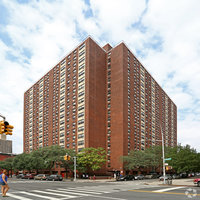

New York City
The place that I was born in was New York City. I was born to Nigerian immigrants and I attended the school until my second year in Middle School. I lived in Harlem, Manhattan with in the the apartment complex on 480 St Nicolas Avenue. Floor 20 was where my family lived which happens to be the top floor;also it was technically the 19th floor since there was no 13th floor.
It was a more quiet area within the city , but it didn't take long for a person to go into the busier areas, like 125th street where the local Magic Johnson theater was located. Behind my apartment was the St. Nicolas Park. It was the place that I would often go to when I wanted to play outside, as well as the train as it was also the location of a subway station. One thing I remeber fondly was the hot dog carts and the Hispanic cold dessert Helado carts.
Lagos
After, New York City, I lived in Lagos, Nigeria. The place was very different from New York City, but it isn't what people think off when they think Africa. If people watched the opening scene of Captain America: Civil War, that was a better representation on Lagos, actually it was in Lagos. There is infrastrutre such as roads and electrcity, however it is under-developed in most places unless you were closer to the city.
Where I lived would consider somewhat between the city and suburban area. We don't have large buses in Nigeria like in America. Instead we have small buses where people will be packed into like sardines; when there wasn't anyroom some people will hang on the outer edges of the bus, holding on tight. It was a scary sight, but I didn't see anybody fall off, granted I only saw Man who would be considered in their prime doing it. Another popular form of transportation was Motorcycle taxis, called Okada. Okada's are everywhere and were very fast, you would have to hang on to the driver as you were riding behind him on the same sit. Side cars were not a thing, since some of the roads can be bad especially after heavy rain.
Dayton

The last place I lived is current location, Dayton,Ohio. I was sent to live with my Grandparents to attend school and get into college as my family situation changed dramatically. Dayton was the first time I lived in an American suburban area, so having the responsibilites of taking care of the lawn and shovling snow was a first for me. One thing thaat shocked me about Dayton was the complete lack of sidewalks besides Downtown. For a New Yorker, it was strange to see in America. I went to Meadowdale High School in Dayton, Ohio where I was part of the Sinclair Upward Bound Program. The Program allowed me to go to different places outside the country such as Columbus to see Ohio State University, Idianapolis where I saw a Cavaliers game live. Pittsburg was also a place I went on a trip to as well, I was able to take a ferry on the river and vist the Steelers Stadium, I even went into the locker room.
Once I was done with High School, I went to Wright State University for my first degree. It was tough but I made it out alife, and made some great friends and memories. Living on Campus was also the first time I lived away from my family, which was actually refreshing as I was able to get away from my Grandmother and Uncles and Aunts who were overbearing at times. It was sad at times to be away from my brothers, sister, and Mother but It was helpful living close to campus.